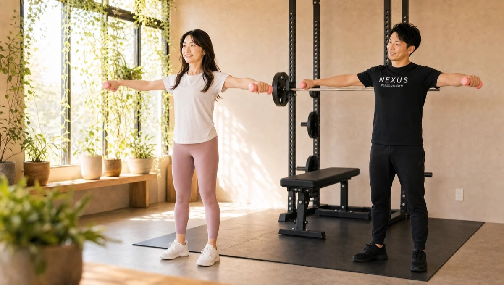

NEXUS Personal Gym ／ 東京都中央区
NEXUSパーソナルジム 東日本橋店｜ストレスごと鍛え直す完全個室ジム

都営浅草線・東日本橋駅、JR馬喰町駅、都営新宿線・馬喰横山駅の3駅から通える、完全個室の隠れ家パーソナルジムです。東日本橋店の特徴は、格闘技経験のあるトレーナーによるミット打ち（パッドトレーニング）。通常のウェイトトレーニングに、思い切り打ち込む有酸素運動を組み合わせることで、身体を鍛えながら仕事のストレスも発散できます。馬喰町・問屋街で働くビジネスパーソンが、「健康でかっこいい大人の身体」を目指して仕事帰りに通うジム。毎日8:00〜23:00・手ぶらOK・LINE予約で、無理なく続けられます。
- 完全個室
- 3駅から通える
- ミット打ちOK
- ストレス発散
- 毎日8:00〜23:00
この店舗の特徴
NEXUS東日本橋店は、都営浅草線・東日本橋駅、JR総武快速線・馬喰町駅、都営新宿線・馬喰横山駅の3駅から通える完全個室パーソナルジム。馬喰町の問屋街・オフィスエリアで働くビジネスパーソンの方が、仕事帰りに多く通っています。この店舗いちばんの個性は、格闘技経験のあるトレーナーによるミット打ち（パッドトレーニング）。トレーナーが構えるミットにパンチやキックを打ち込むトレーニングは、全身を使う脂肪燃焼運動であると同時に、思い切り打ち込むことでデスクワークのストレスを発散する効果もあります。会員からは「格闘技経験のあるトレーナーからパッドトレーニングを受けられて、ダイエットにもストレス発散にも最高」という声をいただいています。もちろん通常のウェイトトレーニングと組み合わせ、一人ひとりの目的に合わせて構成。「健康でかっこいい大人の男」を目指す方にぴったりです。ウェア・タオル・ドリンク・プロテインまで無料提供の手ぶら通いOK、予約はLINEでサッと完結します。
ミット打ちで、ストレスごと燃やす
デスクワークが続くと、身体は動かしていないのに、なぜか疲れとストレスが溜まっていく——そんな感覚を、東日本橋店のミット打ちで一気にリセットしませんか。ミット打ち（パッドトレーニング）は、格闘技経験のあるトレーナーが構えるミットめがけて、パンチやキックを思い切り打ち込むトレーニングです。全身を大きく使うため、短時間でも高い脂肪燃焼効果があり、ダイエットにも最適。そして何より、力いっぱい打ち込む爽快感が、仕事で溜まった緊張やストレスを吹き飛ばしてくれます。東日本橋店では、この ミット打ちを、通常のウェイトトレーニング（筋肉をつける）と有酸素運動（脂肪を燃やす）に組み合わせて構成します。会員からは「格闘技経験のあるトレーナーからパッドトレーニングを受けられて、ダイエットにもストレス発散にも最高」という声を多数いただいています。格闘技が初めての方でも大丈夫。トレーナーが追い込み方を分かりやすく教えるので、自分のペースで気持ちよく身体を動かせます。鍛えることと、ストレスを手放すこと。その両方を一度に叶えるのが、東日本橋店の通い方です。
格闘技経験のあるトレーナーからパッドトレーニングを受けられるのが最高です。思い切り打ち込むとストレス発散になり、減量も兼ねられて、週1回の習慣になりました。仕事帰りに通えるのもありがたいです。
かっこいい大人の身体をつくる

「いつまでも若く、スポーツを楽しめる身体でいたい」「少しハードなトレーニングで、しっかり身体を変えたい」——そんな目標で東日本橋店に通う方も多くいらっしゃいます。東日本橋店では、ミット打ちだけでなく、ウェイトトレーニングでしっかり筋肉をつけ、引き締まった「かっこいい大人の身体」をつくります。大切なのは、ただきついだけのメニューにしないこと。トレーナーが追い込み方を分かりやすく教え、フォームを一つひとつ確認しながら進めるので、狙った部位に効かせられます。会員からは「少しハードなトレーニングを求めて入会したが、追い込み方が分かりやすく、60分があっという間」という声をいただいています。適切な負荷で集中して取り組むから、時間が一瞬で過ぎ、終わったあとには心地よい達成感が残ります。健康的で、見た目にも自信が持てる身体を、一緒につくっていきましょう。
いつまでも若くスポーツを楽しみたくて、少しハードなトレーニングを求めて入会しました。追い込み方を分かりやすく教えてくれるので、60分があっという間です。身体つきが変わってきたのを実感しています。
60分が一瞬で終わる密度

マンツーマンの完全個室だからこそ実現できるのが、「無駄のない60分」です。東日本橋店では、その日の体調やコンディションに合わせて、トレーナーが強度を細かく調整します。ハードに追い込みたい日は思い切り、疲れが残る日は軽めに整える——だから無理なく続けられ、ケガのリスクも抑えられます。会員からは「その日の体調に合わせて調整してくれる。楽ではないが毎回達成感があり、身体が少しずつ変わっている」という声をいただいています。一人で黙々とやると、つい手を抜いたり、逆にやりすぎたりしてしまうもの。トレーナーが隣で見ているから、集中が途切れず、ちょうどいい負荷で追い込めます。仕事の合間の貴重な時間を、密度の高い60分に。終わったあとの爽快感が、また通いたくなる理由です。
その日の体調に合わせて調整してくれるので、無理なく続けられています。楽ではありませんが、毎回しっかり達成感があり、身体が少しずつ変わっているのを実感しています。マンツーマンなので集中できます。
週1回の習慣で、頑固なお腹が変わる

「運動なんて、社会人になってからほとんどしていない」「気づけば、お腹まわりだけが落ちない」——そんな方こそ、まずは週1回の習慣づくりから始めましょう。東日本橋店では、いきなり高頻度を求めず、週1回でも確実に効く運動と、続けられる食事の見直しをセットで提案します。会員からは「週1回の運動習慣がつき、頑固なお腹まわりがすっきりしてきた」という声をいただいています。頑固なお腹まわりの脂肪は、トレーニングだけでなく食事の影響が大きいもの。月額3,000円（税込）のAI食事指導なら、写真を送るだけで食べ方のアドバイスが届き、外食や会食が多いビジネスパーソンでも実践できます。無理な制限ではなく、続けられる範囲で整える——週1回の積み重ねが、確かな変化になります。
週1回の運動習慣がついて、頑固だったお腹まわりがすっきりしてきました。運動が久しぶりでも無理のないペースで進めてもらえるので、続けられています。食事のアドバイスも実践しやすくて助かっています。
3駅から通える立地

東日本橋店は、3つの駅から通える便利な立地です。都営浅草線・東日本橋駅、JR総武快速線・馬喰町駅、都営新宿線・馬喰横山駅——いずれも徒歩圏内で、複数路線を使い分けられます。通勤経路に組み込みやすく、仕事帰りにサッと立ち寄れるのが魅力。3駅が使えるので、その日の予定や天候に合わせてルートを選べ、雨の日でも地下鉄経由で濡れずに通いやすいのも嬉しいポイントです。毎日8:00〜23:00の営業なので、早朝のひと汗にも、残業後のリセットにも対応。ウェア・タオル・ドリンク・プロテインまで無料提供なので、通勤バッグひとつで手ぶらでOKです。予約・変更はLINEで完結し、6時間前まで無料でキャンセル可能。忙しいビジネスパーソンでも、無理なく通い続けられる環境です。まずは無料体験で、ミット打ちの爽快感を体感してみてください。
料金プラン
入会金は通常55,000円、無料体験当日入会で15,000円（税込）に割引。全店舗共通の料金です。
アクセス
- 店舗名
- NEXUSパーソナルジム 東日本橋店
- 住所
- 〒103-0002
東京都中央区日本橋馬喰町1-13-8 リレント日本橋 802 - 最寄り駅
- 都営浅草線 東日本橋駅／JR馬喰町駅／都営新宿線 馬喰横山駅（3駅利用可）
- 営業時間
- 毎日 8:00〜23:00
- 電話番号
- 050-1790-8488
Googleマップの口コミ
出典：Google マップ
NEXUS東日本橋店はGoogle口コミ65件で★5.0を維持。格闘技経験のあるトレーナーによるミット打ちを取り入れた指導と、3駅から通える立地が評価されています。
格闘技経験のあるトレーナーのパッドトレーニングがストレス発散に最高です。減量も兼ねられて、いつの間にか週1回の習慣になりました。仕事帰りに立ち寄れる立地も気に入っています。
少しハードな内容を求めて入会しました。追い込み方を分かりやすく教えてくれるので、60分があっという間に感じます。無理なく強度を上げていけるのが良いです。
その日の体調に合わせて調整してくれます。楽ではありませんが毎回達成感があり、身体が少しずつ変わっているのを実感しています。完全個室で人目を気にせず集中できるのも魅力です。
東日本橋店のよくある質問
Q東日本橋・馬喰町エリアに完全個室のパーソナルジムはありますか？+
Qミット打ち（パッドトレーニング）はできますか？+
Q運動でストレス発散したいのですが、どんな内容ですか？+
よくある質問（全店共通）
料金・制度などNEXUS全店に共通するご質問です。さらに詳しくは110問のFAQをご覧ください。
Q料金はいくらですか？+
Q手ぶらで通えますか？+
Qキャンセルはいつまでできますか？+
Q食事指導はありますか？+
Qトレーナーはどんな人ですか？+
Q女性会員は多いですか？+
Q体験の流れは？+
NEXUSパーソナルジムの特徴・料金をもっと見る